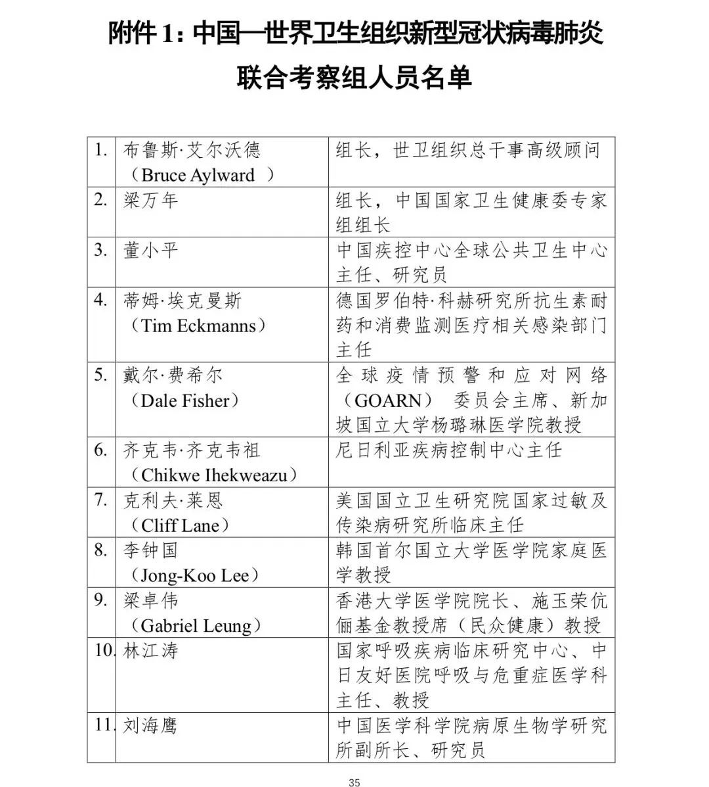
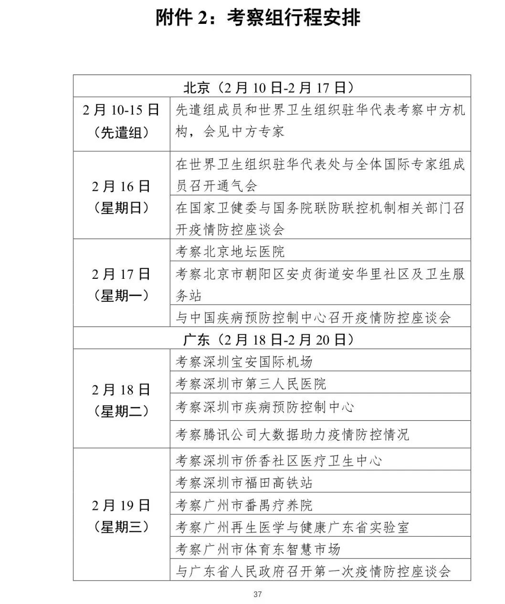
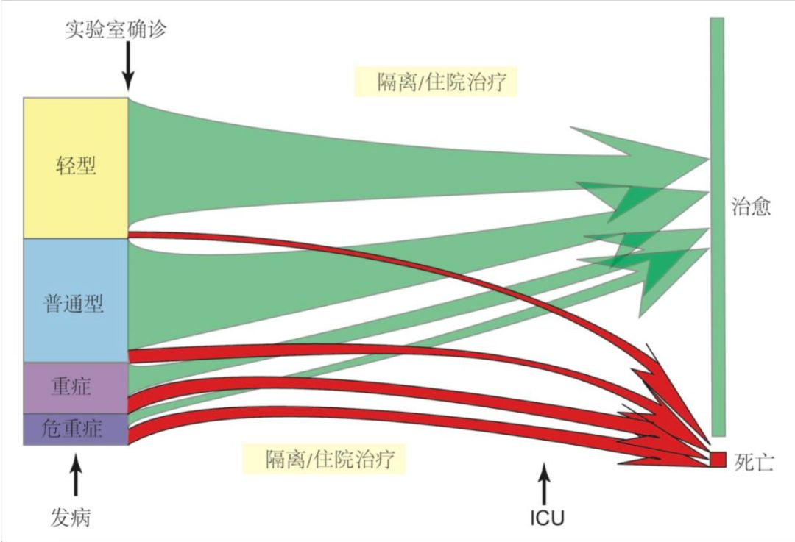
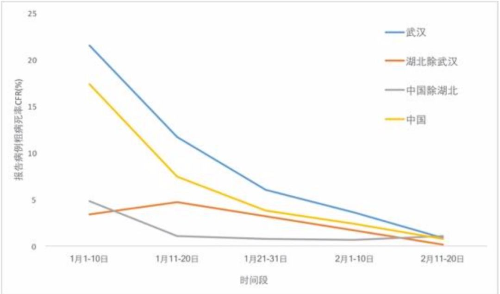
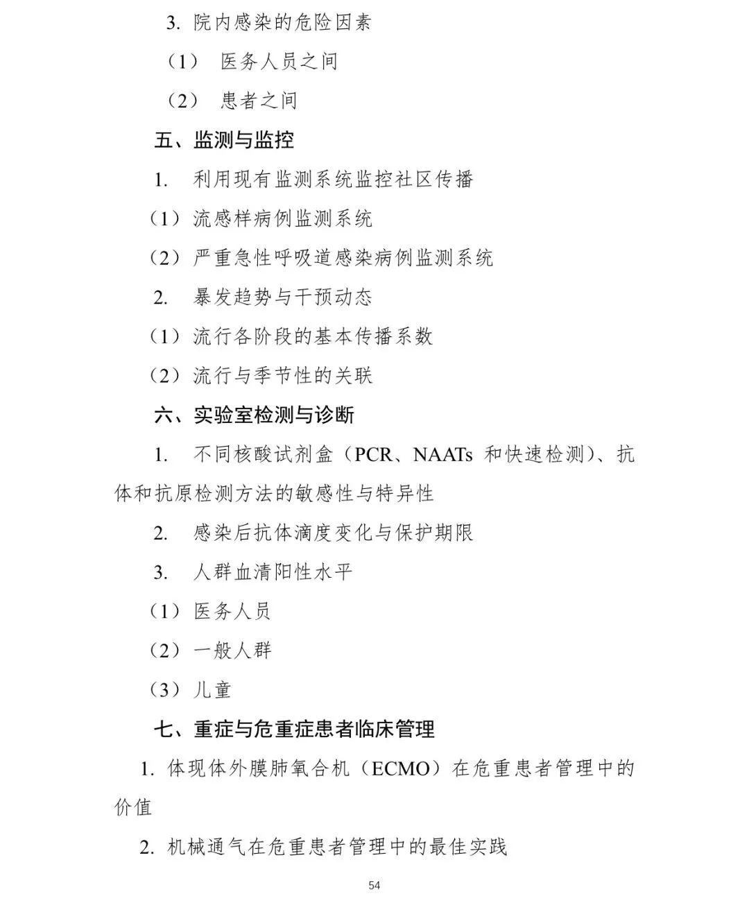

“新冠病毒几乎人人易感”，中国-世卫联合考察报告发布
原文链接 备份链接 健康中国 2月29日，《中国-世界卫生组织新型冠状病毒肺炎（COVID-19）联合考察报告》对外发布。报告指出： 新冠肺炎病毒是一种动物源性病毒。 根据现有证据，不认为空气传播是主要传播方式。 目前的全基因组基因序列系 …

2 月 29 日，国家卫健委网站发布了《中国-世界卫生组织新型冠状病毒肺炎（COVID-19）联合考察报告》，全文 1.6 万余字，本文为摘要版。
联合考察组由来自中国、德国、日本、韩国、尼日利亚、俄罗斯、新加坡、美国和世界卫生组织的 25 名中外专家组成。联合考察组外方组长为世界卫生组织的布鲁斯·艾尔沃德（Bruce Aylward）博士，中方组长为梁万年博士。此次联合考察组于 2020 年 2 月 16 日~ 24 日在华开展考察调研，为期 9 天。
联合考察组对北京、四川（成都）、广东（广州、深圳）和湖北（武汉）等省市进行了实地考察和调研。考察地点包括街道、社区中心、社区卫生服务中心、县/区级医院、新冠肺炎定点医院、交通枢纽（航空、铁路、公路）、农贸市场、药品及个人防护物资储备仓库、研究机构、省级卫生健康委和省市级疾控中心等。





(一) 病毒
2019 年 12 月 30 日，从武汉金银潭医院不明原因肺炎患者中采集了 3 份支气管肺泡灌洗液样本。对样本进行泛 β-冠状病毒实时荧光定量 RT-PCR 检测后，结果显示冠状病毒核酸阳性。生物信息学分析表明，新型冠状病毒（nCoV-19）具有冠状病毒家族的典型特征，属于 β-冠状病毒。该病毒与蝙蝠携带的 SARS 样冠状病毒 RaTG13 株全基因组亲缘关系最近，同源性为 96%。
对 2019 年 12 月底至 2020 年 2 月中旬在不同地点采集的患者标本中分离出的 104 株 COVID-19 病毒株，进行了全基因组测序分析，结果显示它们具有 99.9% 的同源性，无明显基因突变。
对武汉市一名 50 岁男性患者的肺、肝和心脏等尸检标本的组织学检查显示，弥漫性肺泡损伤伴细胞纤维粘液样渗出。肺部显示有肺细胞剥脱和透明膜形成，提示有急性呼吸窘迫综合征（ARDS）。肺组织也显示细胞纤维粘液样渗出、肺细胞剥脱和肺水肿。双肺均可见以淋巴细胞为主的单个核细胞间质炎性浸润。肺泡内可见以大细胞核、双染颗粒的细胞质和核仁突出为特征的非典型肺细胞膨胀的多核合胞细胞，提示病毒导致的细胞病变。未见明显的核内或胞浆内病毒包涵体。
(二) 疫情暴发
截至 2 月 20 日，中国全国累计报告新冠肺炎病例 75,465 例。该病例数据是通过国家卫健委和省卫健委之间的全国报告系统（NRS）进行上报的。
该系统要求每个新冠肺炎病例诊断后，负责医生要通过该系统进行网络直报。无症状感染者也通过该系统进行报告。
考察组得到以下流行病学考察结果：
1. 人口学特征
截至 2 月 20 日，在报告的 55,924 例实验室确诊病例中，年龄中位数为 51 岁（年龄范围 2 天-100 岁；四分位间距 39-63 岁），大多数病例（77.8%）介于 30-69 岁之间。其中，51.1% 为男性，来自湖北的病例占 77%，农民或体力劳动者占 21.6%。
2. 动物溯源
新冠肺炎病毒是一种动物源性病毒。目前的全基因组基因序列系统进化分析结果显示，蝙蝠似乎是该病毒的宿主，但中间宿主尚未查明。
3. 传播途径
新冠肺炎在无防护下通过飞沫和密切接触在感染者和被感染者之间发生传播。尚无新冠肺炎空气传播的报告，且根据现有证据，也不认为空气传播是主要传播方式。但在医疗机构中或可存在因医疗操作产生气溶胶而发生空气传播的可能。粪便排毒已在一些患者中得到证实，少数病例粪便中还发现了活病毒，但根据现有证据，粪-口传播似乎并不是新冠肺炎传播的主要传播方式，其在新冠肺炎病毒传播中的地位和作用仍待明确。
4. 家庭传播
在中国，新冠肺炎的人际传播主要在家庭中发生。
5. 密切接触者追踪
中国采取了坚决果断的措施对新冠肺炎病例和密切接触者进行确认和追踪。例如，武汉有超过 1,800 个流行病学调查小组，每组至少 5 人，每天对成千上万的密切接触者进行追踪。正是通过艰苦卓绝的工作，使得确认的密切接触者中绝大多数都被追踪到并完成了医学观察。1%-5% 的密切接触者后来被实验室诊断为新冠肺炎病例。
**6. 在发热门诊和常规流感样病例（ILI）和严重急性呼吸道感染（SARI）监测中进行检测**
联合考察组系统询问了在中国常规呼吸道疾病监测系统中针对新冠肺炎进行检测的情况，包括对流感样病例（ILI）和严重急性呼吸道感染（SARI）监测样本进行 RT-PCR 检测，以及对发热门诊患者进行检测的结果，以了解新冠肺炎是否存在社区传播且未被发现的情况。
7. 易感性
由于新冠肺炎病毒是一种新发现的病原体，人群普遍缺乏免疫力。根据目前在中国观察到的流行病学特征，几乎人人易感，尽管可能存在易感性增加的危险因素，但还需要进一步研究，明确感染后是否具有免疫力。
(三) 传播动力学
1. 武汉传播模式
在武汉发现的早期病例被认为是通过动物传染到人的途径感染，因为许多人报告有华南海鲜批发市场暴露史。截至 2 月 25 日，尚未查明动物来源。
在疫情早期的某个时点，部分病例间产生了人际传播，导致随后在一系列控制措施实施前发生了社区暴发并首先在武汉扩散开，再随着大规模人口流动，从武汉进一步辐射到湖北省和中国其他大部分地区，从而解释了高达 2-2.5 的传播系数（R0值。
2. 湖北除武汉以外
在紧邻武汉的地区（孝感、黄冈、荆州和鄂州），传播程度低于武汉。对于该省其他地区，由于交通管制后与武汉的交通联系不紧密，且人流不畅，其动力学与全国其他地区的动力学更为接近。在湖北省内，一系列控制措施（包括控制社交距离）降低了社区传播，从而减少发病。
3. 中国除湖北以外
病毒输入一个地区后，如不加干预，会很容易引起当地发生聚集性病例，进而导致相对较高的 R0 （2-2.5），但如采取严格隔离和增大社交距离的控制措施，可以有效减少发病。
4. 特殊场所
我们注意到医疗机构、监狱和其他封闭场所也发生了疫情。但它们似乎并不是疫情扩散的主要驱动因素。
联合考察组获悉，大多数医务人员感染是发生在武汉疫情暴发早期，当时应对这种新疾病的物资和经验较为缺乏。此外，许多医务人员病例可能是在家庭内而非医院感染的。
5. 儿童
数据表明 18 岁及以下人群的罹患率相对较低（占所有报告病例的 2.4%）。在武汉，对 2019 年 11 月、12 月和 2020 年 1 月前两周的流感样病例进行检测，未发现有儿童新冠病毒检测呈阳性。根据现有数据，在没有血清学研究结果的情况下，无法确定儿童感染状况以及儿童在传播中所起的作用，无法回答儿童是否较不易感或他们的临床表现是否不同(即通常轻症)等问题。联合考察组获悉，儿童病例多是通过追踪成人病例家庭密切接触者的时候发现的。值得注意的是，接受联合考察组访谈者未发现有儿童传染成人的情况。
(四) 症状、体征、疾病进程和严重程度
图 | 新冠肺炎疾病进程示意图。注：疾病严重程度和预后的方框的相对大小反映了截至 2020 年 2 月 20 日报告病例的比例。箭头的大小指示康复或死亡病例的比例。疾病定义如上所述
多数感染新冠肺炎病毒的患者为轻症并可痊愈。约 80% 的实验室确诊病例为轻症和普通型，包括无肺炎或肺炎患者，13.8% 的患者为重症。
已有无症状感染的报告，但多数在报告时无症状的病例随后会出现症状。真正的无症状感染者的比例尚不明确，但相对较罕见，也不是传播的主要驱动因素。
重症和死亡高危人群为年龄 60 岁以上，以及患有高血压、糖尿病、心血管疾病、慢性呼吸道疾病和癌症等基础性疾病者。儿童病例似乎很少且病情较轻，19 岁以下病例约占总报告病例的 2.4%。极少数 19岁 以下病例发展为重症（2.5%）或危重症（0.2%）。
截至 2 月 20 日，55,924 例实验室确诊病例中有 2,114 例死亡（粗病死率为3.8%；注：其中包含部分由临床诊断病例转成的确诊病例）。粗病死率因地区和传播强度而异（武汉 5.8%，中国其他地区 0.7%）。在中国，疫情暴发早期的粗病死率较高（1 月 1 日至 10 日间发病的病例，粗病死率为 17.3%）；随着时间推移，2 月 1 日之后发病病例的粗病死率降至 0.7%。
图 | 中国新冠肺炎病死率(总病例中报告的死亡人数)不同 地点随时间的变化图，截至 2020 年 2 月 20 日
病死率随年龄增长而增加，80 岁以上者病死率最高（21.9%）。男性病死率高于女性（分别为 4.7% 和 2.8%）。退休人员在各职业人群中病死率最高，为 8.9%。无合并症的患者病死率为 1.4%，有合并症的患者病死率显著增高（合并心血管疾病患者为 13.2%，糖尿病为 9.2%，高血压为 8.4%，慢性呼吸道疾病为 8.0%，癌症为 7.6%）。
根据可用的初步数据，从发病到临床痊愈的中位时间，轻症约为 2 周，重症或危重症约为 3-6 周。初步数据表明，从起病到进展为出现缺氧等重症的时间为 1 周。死亡患者中，发病到死亡的时间范围为 2-8 周。
(六) 现有知识局限



联合考察组对各省的粗发病率进行了比较，估计中国采取的政府主导的全社会防控措施成功避免或至少预防了全国范围内数十万病例的发生。中国新冠肺炎疫情的下降显著地保护了国际安全，构建起了防止疾病国际传播强有力的第一道防线。然而，中国和中国人民为遏制疫情的爆发付出了巨大的生命和物质代价。
在充分肯定中国防控工作成绩的同时，也发现在公共卫生应急反应能力领域还有进一步提升的空间，包括消除阻碍及时开展早期预警和快速应对；短时间内大幅扩容隔离和救治能力；优化医疗机构一线医务人员防护；加强关键优先的科研领域协同合作；促进与国际社会共享关键数据等。
联合考察组同时评估了全球应对措施及下一步工作。
新型冠状病毒具备独有特征。例如，与流感相比，其在儿童中的传播活跃度有限，其临床表现也与 SARS 不尽相同。新型冠状病毒极强的传播力、导致高危人群死亡的不确定性、以及对社会经济秩序破坏力，是人类冠状病毒中非比寻常的。如果要应对，必须假定全球人口均是易感人群。此外，目前还不清楚新型冠状病毒的动物来源，因此已发生疫情的地区必须考虑病毒复发的风险。
国际社会无论在思想上，还是行动上都还尚未准备好去组织实施已经被中国证明了的唯一能够阻断或最大程度降低新冠病毒传播的措施，这些措施包括：开展积极主动监测，迅速发现并立即诊断、隔离病例，严格追踪并隔离密切接触者，引导民众理解并接受上述措施。
贯彻落实上述举措并确保其实施效果，不仅需要高层迅速做出决策，公共卫生体系全面启动，还需要整个社会充分参与。新型冠状病毒如果不受控制地持续在社区传播，可能造成重大风险和严重损害，而采取综合性非药物性干预措施能够为研制疫苗及验证治疗方法争取到数周和数月时间。此外，目前中国以外的新发病例大都出现在中高收入国家，这些国家均承诺严格采取“非药物性干预措施”减缓传播，这对于建立其保护卫生体系及应对能力较差的低收入国家的第二道防线至关重要。
通过全面实施这些措施而获得的时间——即使只有几天或几周——在最终减少新冠肺炎致病和死亡方面都十分宝贵。中国在发现病毒后短短7周内，开展的科学研究在知识、方法和工具等方面都取得了巨大的进步。
必须充分利用通过实施遏制新冠肺炎措施所争取的时间，更加有效地提高全球应对疫情能力，尽快推出能够遏制病毒传播的具体工具。
新型冠状病毒正以惊人的速度蔓延，新冠肺炎在任何环境中爆发都将导致非常严重的后果。已有证据充分显示，综合性非药物性干预措施在某些情况下可以减少甚至阻断传播。然而，全球和各国的应对方案往往对非药物性干预措施态度模糊。为减少新冠肺炎发病和死亡，短期内采取的应对方案就是积极采取非药物性干预措施，而充分落实这些措施就需要：快速发现并隔离病例，严格实施密切接触者追踪、医学观察和隔离，以及相关人群和社区的直接参与。
中国及全球各国都在开展大量新冠肺炎研究，相关科研项目和产品研发工作也正在进行，这值得鼓励和支持。但是，大量的研究项目需要优化，否则将有可能消耗研究者的精力和资源，而优化能够将研究成果时间表缩短宝贵的几周或几个月。新冠肺炎防控的紧迫形势要求必须优先开展诊断，治疗和疫苗领域的研究工作。
同样，关于新型冠状病毒的起源、疾病自然史以及病毒传播动力学方面的研究选题已经很多。然而，政策决策者很难在处置疫情和挽救生命的紧迫性与众多研究中取得适当的平衡。因此，应当优先选择保障与关键知识局限性相关的研究项目，而弥补这样的知识差距可以迅速对处置疫情产生很大的直接影响。建议优先开展家庭、机构和社区内聚集性传播危险因素研究，基于已有的呼吸系统疾病监测系统的人群新冠肺炎抽样监测，不同年龄人群血清流行病学调查，临床病例系列分析以及聚集性病例调查等。
(一) 对中国的建议
1. 考虑经济活动恢复、旅行限制逐渐解除、学校重新开学带来新出现病例和聚集性病例的风险，应继续维持基于各地风险评估的程度适当的应急管理方案；
2. 密切监测，分阶段有序解除限制措施，先复工和返程、然后复学，直至最终取消其他限制措施；
3. 进一步加强应急管理机制建设，协调公共卫生部门（如疾病预防控制中心）、医疗机构和社区联动机制，持续保持警惕，随时遏制疫情反弹；
4. 重点开展应急响应和风险管理决策相关研究，识别家庭、机构、医院和社区传播的危险因素，不同年龄人群血清流行病学调查，尽快在武汉开展新冠肺炎动物疫源综合性调查，开展集中研究项目，快速确定最有效的诊断和血清学检测方法，测试现有抗病毒药物和各类疫苗载体，中国应该参与多国试验项目；
5. 中国作为对新冠肺炎了解最多的国家，应持续系统的实时分享流行病学资料和临床结果与经验，帮助全球共同应对新冠肺炎疫情。
(二) 对有输入性新冠肺炎病例及/或新冠肺炎疫情暴发国家的建议
1. 立即启动最高级别国家应急处置方案，确保各级政府和全社会采取所有必要的非药物性干预措施，阻断疫情传播；
2. 优先进行彻底的病例筛查和检测，耐心细致做好接触者追踪调查，严格隔离密切接触者；
3. 大力开展疫情防治宣传，让公众充分认识到新冠肺炎疫情的严重性，并发挥公众力量，阻止疫情传播；
4. 立即扩大监测范围，以尽快发现新冠肺炎传播链；方法包括对所有非典型性肺炎症状患者进行新冠病毒检测，对上呼吸道疾病患者进行新冠病毒筛查和近期可能有新冠肺炎患者暴露史人员筛查，并在现有监测系统增加新冠病毒检测（如流感样病例和严重急性呼吸道感染病例监测系统）；
5. 制定多部门联合情景规划并模拟演练，根据需要采取更严格的措施阻断传播链（例如暂停大型集会和关闭学校和工作场所）。
(三) 对尚未受疫情影响国家的建议
1. 做好随时启动最高级别应急响应机制的准备，动员各级政府和全社会共同应对可能暴发的新冠肺炎疫情；
2. 根据对采用非药物性干预措施阻断新冠肺炎传播有效性最新认识，迅速调整国家应急处置方案，将新冠肺炎快速检测、大规模病例隔离和呼吸机设备等救治能力、严格追踪和管理接触者纳入国家应急处置方案和能力建设当中；
3. 立即加强对新冠肺炎的监测，快速检测对阻断传播至关重要，考虑对所有非典型的肺炎症状患者进行新冠肺炎病毒检测，并将新冠肺炎病毒检测纳入现有流感监测系统；
4.立即在所有医疗机构门急诊和发热门诊实施最为严格的防控措施，这些是新冠肺炎病例最有可能输入的区域；
5. 迅速评估公众对新冠肺炎的认知，并据此立即调整国家健康促进材料和活动，确定与媒体沟通的临床权威专家。
(四) 对公众的建议
1. 认识到新冠肺炎是一种全新出现的令人关注的传染性疾病，但只要采取正确的应对措施，疫情暴发就可以得到控制，患者大都能够康复；
2. 立即采取并落实最为严格的预防措施，勤洗手，打喷嚏或咳嗽时掩住口鼻；
3. 时时关注新冠肺炎及其体征和症状(如发热、干咳)的最新信息，各国会根据疫情发展不断调整应对策略；
4. 人人做好准备，通过各种方式积极参与到疫情防控中来，严格保持“社交距离”，努力帮助老年人等高危人群。
(五) 对国际社会的建议
1. 认识到各国之间真正的团结与合作对于解决新冠肺炎的共同威胁至关重要并落实这一原则；
2. 根据《国际卫生条例》的要求迅速共享信息，包括输入病例的详细信息，促进各国追踪接触者并告知防控措施；
3. 识别新冠肺炎感染的国家疫情快速变化的风险特征，持续监测疫情暴发趋势和控制能力，重新评估严重干扰国际旅行和贸易的其他卫生措施。
-End-
参考：


原文链接 备份链接 健康中国 2月29日，《中国-世界卫生组织新型冠状病毒肺炎（COVID-19）联合考察报告》对外发布。报告指出： 新冠肺炎病毒是一种动物源性病毒。 根据现有证据，不认为空气传播是主要传播方式。 目前的全基因组基因序列系 …
原文链接 备份链接 近期，多国新冠肺炎感染者数量持续攀升。截至目前，意大利累计死亡患者人数已经达到17人，确诊病例增至655例，疫情蔓延至意大利13个大区。 而作为当前受新冠肺炎疫情影响最严重的欧洲国家，意大利的多项经济活动正在经受冲击。 …
原文链接 备份链接 作为一个2400万人的大城市，上海从2月9日开始每天的确诊人数只有个位数。整个疫情期间，没有疫情大爆发，没有医务人员的感染，确诊病例的治愈率达到了80%。 新冠疫情是一个重大的突发事件，上海给人的感觉却是利落且井然有 …
原文链接 备份链接 【财新网】（记者 王婧）新冠肺炎疫情持续已近两月，中国疾控体系的短板暴露无遗。2月27日，在广州市新闻发布会上，国家卫健委高级别专家组组长钟南山称，各级疾控中心（CDC）了解疫情，却没有对外发布的权力，只能逐级上报。这 …
原文链接 备份链接 截至目前，巴西确诊拉丁美洲首例新冠肺炎病例。疫情正在从意大利向国外蔓延，周边邻国瑞士、奥地利相继出现首例确诊病例，西班牙新增一例确诊病例，确诊患者均与意大利有关。 截至25日，中东有新冠肺炎确诊病例的国家已增至9个： …